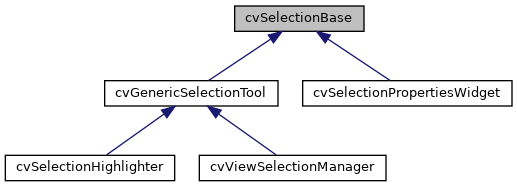
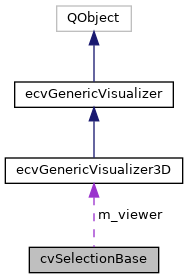

|
ACloudViewer
3.9.4
A Modern Library for 3D Data Processing
|
|
ACloudViewer
3.9.4
A Modern Library for 3D Data Processing
|
Lightweight base class for all selection-related components. More...
#include <cvSelectionBase.h>


Public Member Functions | |
| cvSelectionBase () | |
| virtual | ~cvSelectionBase ()=default |
| virtual void | setVisualizer (ecvGenericVisualizer3D *viewer) |
| Set the visualizer instance. More... | |
| ecvGenericVisualizer3D * | getVisualizer () const |
| Get the visualizer instance. More... | |
Protected Member Functions | |
| PclUtils::PCLVis * | getPCLVis () const |
| Get PCLVis instance (for VTK-specific operations) More... | |
| bool | hasValidPCLVis () const |
| Check if visualizer is valid and is PCLVis. More... | |
| vtkDataSet * | getDataFromActor (vtkActor *actor) |
| Get data object from a specific actor (ParaView-style) More... | |
| QList< vtkActor * > | getDataActors () const |
| Get all visible data actors from visualizer. More... | |
| std::vector< vtkPolyData * > | getAllPolyDataFromVisualizer () |
| Get all polyData from the visualizer. More... | |
| virtual vtkPolyData * | getPolyDataForSelection (const cvSelectionData *selectionData=nullptr) |
| Get polyData using ParaView-style priority (centralized method) More... | |
Protected Attributes | |
| ecvGenericVisualizer3D * | m_viewer |
| Visualizer instance (abstract interface) More... | |
Lightweight base class for all selection-related components.
Provides only visualizer access without adding unnecessary functionality. This base class is designed to be minimal (~16 bytes) to avoid memory overhead for components that only need visualizer access.
Usage guidelines:
Design rationale:
Definition at line 44 of file cvSelectionBase.h.
|
inline |
Definition at line 46 of file cvSelectionBase.h.
|
virtualdefault |
|
protected |
Get all polyData from the visualizer.
Returns all valid polyData from visible and pickable actors in the renderer. Useful when you need to process multiple actors or when the default selection strategy (largest actor) is not appropriate.
Definition at line 154 of file cvSelectionBase.cpp.
References PclUtils::PCLVis::getCurrentRenderer(), getPCLVis(), CVLog::PrintVerbose(), and CVLog::Warning().
|
protected |
Get all visible data actors from visualizer.
Definition at line 117 of file cvSelectionBase.cpp.
References PclUtils::PCLVis::getCurrentRenderer(), getPCLVis(), CVLog::PrintVerbose(), and CVLog::Warning().
Referenced by cvViewSelectionManager::getPolyData(), and getPolyDataForSelection().
|
protected |
Get data object from a specific actor (ParaView-style)
| actor | The target actor |
Definition at line 49 of file cvSelectionBase.cpp.
References data, and CVLog::PrintVerbose().
Referenced by cvViewSelectionManager::getPolyData(), and getPolyDataForSelection().
|
protected |
Get PCLVis instance (for VTK-specific operations)
Use this method when you need to access VTK-specific functionality like getCurrentRenderer(), UpdateScreen(), etc.
Always check for nullptr before using!
Definition at line 33 of file cvSelectionBase.cpp.
References m_viewer.
Referenced by cvSelectionHighlighter::clearHighlights(), getAllPolyDataFromVisualizer(), getDataActors(), hasValidPCLVis(), cvSelectionHighlighter::setHighlightColor(), cvSelectionPropertiesWidget::setHighlighter(), cvSelectionHighlighter::setHighlightOpacity(), cvSelectionHighlighter::setHighlightsVisible(), and cvViewSelectionManager::setVisualizer().
|
protectedvirtual |
Get polyData using ParaView-style priority (centralized method)
| selectionData | Optional selection data to extract from (highest priority) |
This method encapsulates the ParaView-style priority logic: Priority 1: From selectionData's actor info (if provided and has actor info) Priority 2: From selection manager singleton's getPolyData() Priority 3: From first data actor (fallback for non-selection operations)
This centralizes the logic and avoids duplication across all tools. Uses cvViewSelectionManager::instance() internally (singleton pattern).
Note: Subclasses (like cvGenericSelectionTool) can provide enhanced versions that also check their m_currentSelection.
Reimplemented in cvGenericSelectionTool.
Definition at line 72 of file cvSelectionBase.cpp.
References data, getDataActors(), getDataFromActor(), cvViewSelectionManager::getPolyData(), cvSelectionData::hasActorInfo(), cvViewSelectionManager::instance(), cvSelectionData::primaryPolyData(), and CVLog::PrintVerbose().
Referenced by cvGenericSelectionTool::getPolyDataForSelection(), and cvSelectionPropertiesWidget::updateSelection().
|
inline |
Get the visualizer instance.
Definition at line 64 of file cvSelectionBase.h.
Referenced by cvSelectionToolController::registerAction(), and cvViewSelectionManager::setVisualizer().
|
protected |
Check if visualizer is valid and is PCLVis.
Definition at line 41 of file cvSelectionBase.cpp.
References getPCLVis(), and m_viewer.
Referenced by cvGenericSelectionTool::getActorsAtPoint(), and cvGenericSelectionTool::hardwareSelectInRegion().
|
inlinevirtual |
Set the visualizer instance.
| viewer | Pointer to the generic visualizer |
This uses the abstract ecvGenericVisualizer3D interface to avoid exposing PCLVis to upper layers (MainWindow, PropertiesDelegate, etc.)
Reimplemented in cvViewSelectionManager.
Definition at line 56 of file cvSelectionBase.h.
Referenced by cvFindDataDockWidget::configure(), and cvViewSelectionManager::setVisualizer().
|
protected |
Visualizer instance (abstract interface)
Definition at line 129 of file cvSelectionBase.h.
Referenced by getPCLVis(), hasValidPCLVis(), cvSelectionHighlighter::highlightElement(), and cvSelectionHighlighter::highlightSelection().